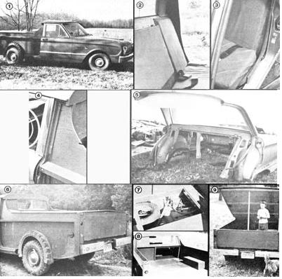

Many country dwellers find that a pickup truck is nearly indispensable for performing a multitude of farm tasks ... from hauling manure to delivering an ailing goat to the vet. However, not every aspiring back-to-the-lander can afford to pay the steep prices that even used examples of the versatile haulers often command. In fact, a couple of years ago I found myself in just such a bucks-down situation . . . and decided to turn my old Falcon into a pickup truck.
The drive to 'keep on truckin' " has led any number of industrious individuals to attempt sedan-to-pickup switchovers. Some of the transmutations have worked amazingly well, but other projects-undertaken by folks without the requisite knowledge of automobile structure and stress-have ended up as dismal failures. The major reason is that most American cars built since about 1960 employ what is called unitized construction, which means that the body of the vehicle is a structural part of the chassis. More than once I've seen the pitifully butchered remains of a haphazardly chopped unibody car flopping down the road . . . just waiting for the first significant load to break its flimsy spine in half.
Consequently, anyone contemplating a conversion will find a pre-sixties sedan (with separate body and frame) to be a better candidate for truckhood. But don't completely rule out the plentiful unit construction models! With a little planning-which this article will try to help provide-you can give your "modern" auto-turned-truck all the strength it'll need . . . at the same time removing a few hundred pounds of extraneous roofing and flimflam.
For example, my own change-of-life truck was once a 1962 Ford Falcon. I chose the small unitized-body Dearborn product for a couple of good reasons: First, I already had it sitting in my driveway . . . and second, I knew I could afford to feed its fuel-thrifty six-cylinder engine.
If you don't happen to have a car that's begging to be transformed, it's often possible to find really inexpensive potential "converts" in a local junkyard. Once an American passenger car is more than about five years old, repairing any significant rear-end damage tends to cost more than the vehicle is worth. Such "totals" frequently end up in the auto graveyard with nothing more than cosmetic wounds. Since you'll be removing the body parts from the rear of the car anyway, fender bends are unimportant. Be sure to check the springs and axle for soundness, though, and make sure that there are enough intact rear frame members to provide places to attach your soon-to-be truck's bed.
PLAN AHEAD
Once you've selected a suitable runabout, find yourself a crayon or other marker to use to plot out your incisions. Because the body of a unitized car contributes so much to the chassis's overall strength, you'll have to work around the doorposts, the rocker panels, and the floor behind the front seat. On earlier (separate-frame) models, however-depending on how the passenger compartment is mounted to the frame-you may want to cut away that flooring . . . and most of such a car's sheetmetal shell can be unbolted and set aside. Of course, in either case, you'll have to cut the rear of the roof off.
You may also want to (or have to) relocate your gasoline tank. The container might be attached to parts you want to remove, for instance, and-even if the mounts are salvageable-the tank may be hung too low to allow you to putt around in the back pasture. When you plan a new location for fuel storage, be sure to consider the practicality of the position where the tank's filler neck will eventually emerge from the pickup bed.
Then-since almost all autos store a spare tire, a jack, and tools in the trunk-such road emergency supplies will have to be relocated, too. Most unibody cars will still have the flooring behind the front seat, so you can simply design a hatch in the wooden floor of the load bed to gain access to a storage compartment below.
Now if you've picked a small sedan, like my Falcon, you can add a good bit of space to the size of your load bed by doing away with the stock front seat. By constructing a perch from plywood and dense foam padding, I managed to provide my truck with an additional 12 inches of useful carrying capacity. Furthermore, while I was building the seat, I included a hinged "door" in the back of the cab's passenger side "chair" . . . to allow me to slide one end of my 12-foot ladder into the space where a companion could otherwise have ridden.
CHOP SHOP
It's possible to do all the cutting that your conversion will require with a large chisel and hammer, but a bodyman's panel-cutting chisel or a cutting torch will make the work go much more quickly and easily. Sheet-metal sections-such as the roof-can actually be severed by a saber saw fitted with a metalcutting blade, and you'll also find a man dual hacksaw helpful for getting through thicker partitions. (Don't forget, sheet metal that's been cut tends to be sharp and jagged, so wear heavy gloves to avoid slicing up your hands.)
After you lift away the rear end of the car, you can outline the side panels for the pickup bed. The pieces can be made from 3/8" CDX (construction grade) plywood, and must be shaped and sized to both slide inside the doorposts carol clear the tires . . . even when the suspension is compressed or the axle twisted. Attach the panels to the inner sides of the doorposts with numerous small bolts to distribute the load evenly.
Each side panel should be gusseted with 2 X 4's or other suitable lumber. It's best if one of the support boards runs the length of each plywood sheet, and at least one more should connect vertically between the horizontal brace and the chassis. These planks (along with the plywood) serve to replace the structural soundness that was formerly provided by the removed body parts.
More 2 X 4 lumber can then be used to form the crossmembers that the bed will ride upon. Connect such supports to the side panels with cleats and to the chassis below with bolts. The rearmost crossmember is the most important of this group and-if possible-should be bolted to the frame mounts where the bumper was attached.
I chose 1/2" CDX plywood for my truck's load bed . . . both to provide additional rigidity to the car's frame and to take the strain of having heavy loads tossed onto it. Two 4' X 8' sheets will be needed to form the bed, since the finished product will be wider than four feet. I recommend running the grain of the wood lengthwise to increase them strength of the truck's chassis.
Of course, the sheets must also have wheel wells cut into them (again allowing for both suspension travel and axle deflection). When you fasten the flooring to the side panels, use construction cement, cleats, and plenty of 1-1/2" roofing nails.
The chunks of plywood that are cut away to provide the wheel openings can be reused-along with supplementary pieces of the sandwiched wood-to build the boxes around the wells, and I've found that sections of old truck tires make very effective wheel-well liners/ fenders/ mudguards. (My pickup's tailgate-which was built sometime later-consisted of little more than appropriately sized pieces of plywood with braces cut from 2 X 4 scraps.)
The last wooden part of the truck to be installed will be the wall behind the seat.
This piece should be cut to fit snugly between the doorposts. A liberal application of cleats will help the panel carry the load that was previously handled by the roof and the rear window pillars. If you're replacing the stock front seat, you can cut across this board and tilt the lower section to form your seat's back. In any case, it's a good idea to place a horizontal 2 X 4 between the doorposts . . . to supply a little more torsional strength. (It's also best to finish your new truck bed with a sealer and quality deck enamel before the elements get a chance to crack or discolor the wood.)
DETAILS
Any additional niceties will depend upon your own preference and needs. I added a plexiglass rear window to my Falcon truck so I could still use my inside rearview mirror. And-since I planned to run the converted sedan on the highway-I installed taillights (which were grounded individually), and a thick hardwood bumper attached to the rear crossmember with carriage bolts and rubber isolators scavenged from the body mounts.
Finally, although the already accomplished removal of a few hundred pounds of metal will increase your car's load capacity, you may still want additional weight-handling capability. There are a number of different approaches to increasing your vehicle's poundage potential, but I've found that air shocks afford the easiest adjustability.
Then, once your pickup has been "tuned in" to exactly the jobs you'll need it for, you can begin hauling in style. Never mind those occasional sideways looks at your vehicle. After all, a convert-a-car is a bit curious-looking, but I've never minded being original . . . especially when it saves me money. After all, pretty is as pretty does!
EDITOR'S NOTE: Mr. Bowden has a more detailed booklet - encompassing some 20 pages of explanation on the carto-truck conversion - which he's willing to pass on to anyone who's interested for a mere $3.00. You can send for the instructions by writing to: Ralph C. Bowden, Dept. TMEN, Route 8. Box 219, Cookeville, Tennessee 38501.
|
 |
|
|